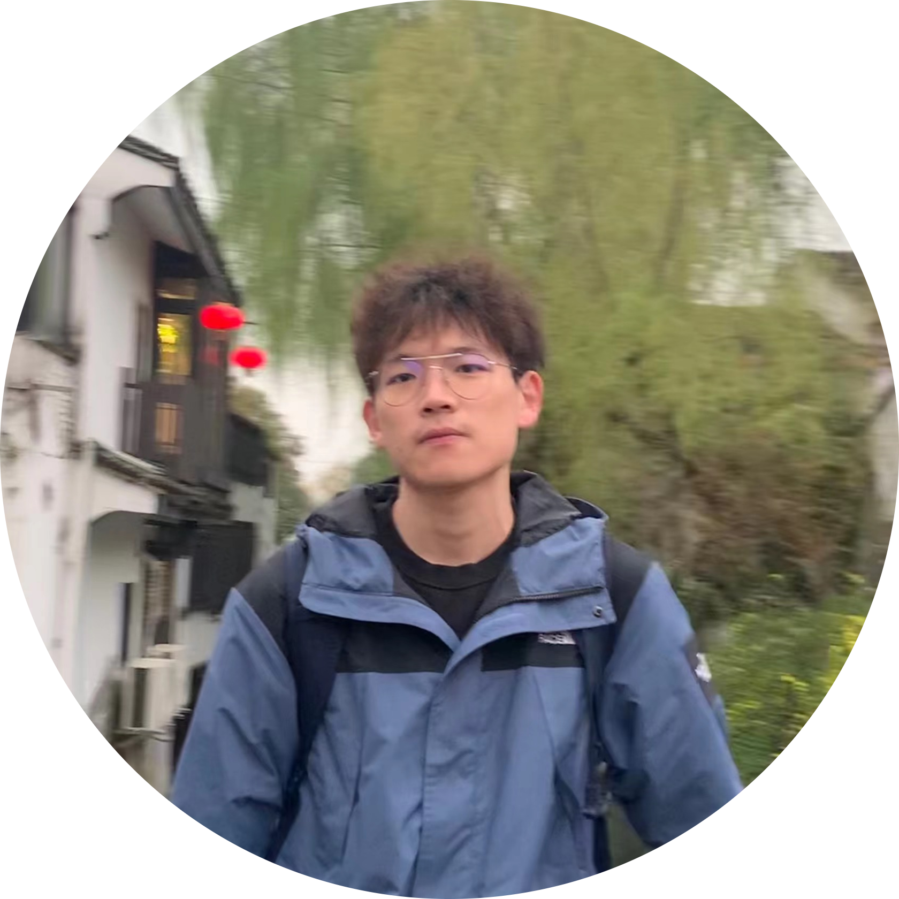

|
I am a first-year Ph.D. student in the Donald Bren School of Information and Computer Sciences at University of California, Irvine advised by Prof. Alfred Chen. I received my B.Eng. degree in Automation at Huazhong University of Science and Technology. I am honored to work as a research intern with Prof. Cihang Xie in CCVL at Johns Hopkins University & VLAA at UC, Santa Cruz, Prof. Ziwei Liu at Nanyang Technological University and I also spent time at OpenMMLab at Shanghai AI Lab. Email / CV / Google Scholar / Twitter / Github |
 |
{kind=link}
|
|
- [12/2023] - One paper is accepted by TMLR.
- [11/2023] - We are hosting The RoboDrive Challenge at ICRA 2024.
- [09/2023] - One paper is accepted by NeurIPS 2023.
- [06/2023] - I will join OpenMMLab at Shanghai AI Lab as a intern , during summer 2023.
- [03/2023] - I will join University of California, Irvine in 2023 Fall as a PhD student in Computer Science.
- [11/2022] - We are organizing the RoboDepth Competition at ICRA 2023.
- [05/2022] - I will join CCVL at Johns Hopkins University as a research intern, during summer 2022.
|
My research focuses on computer vision and machine learning. |

|
|

|
|

|
|
|
|
- Research Intern, OpenMMLab, June 2023-Aug 2023.
- Research Assistant, NTU, Dec 2022-Jun 2023.
- Research Intern, JHU & UCSC, Summer 2022.
- Research Assistant, HUST, 2021-2023.
|
|
- Dean's Fellowship, UC Irvine, 2023.
- Honours Degrees, HUST (Top 3%), 2023.
- National Scholarship, (Top 0.2% national-wide), 2020 and 2021.
- Outstanding Undergraduate Student, HUST (Top 1%), 2020.
- Merit Student, HUST (Top 7%), 2020 and 2021.
|
|
- Conference Reviewer: CVPR, IEEE S&P, ACM CCS
- Journal Reviewer: ISPRS J. Photogramm. Remote Sens

|
Stolen from Jon Barron |